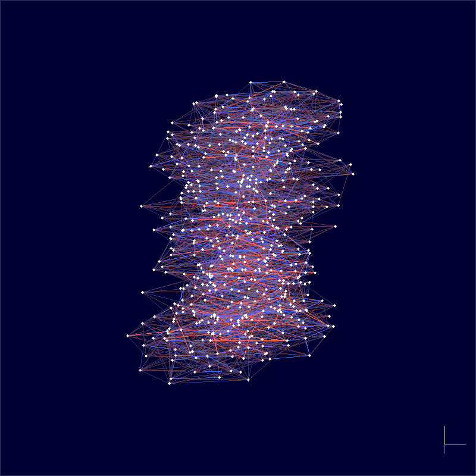
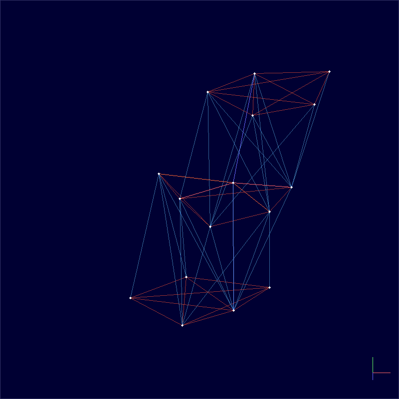

Getting Started¶
Installation¶
You need Python 3.9+, a C++20 compiler (GCC 10+, Clang 10+, or MSVC 2019+), and CMake 3.18+.
pip install -e ".[dev]"
Verify:
python -c "import tessera; print('tessera OK')"
CUDA GPU acceleration is auto-detected. To force CPU-only: TESSERA_CUDA=0 pip install -e .
Quick start: build a universe¶
Build a 4D Lorentzian spacetime, thermalize it with CDT Monte Carlo, and export a rotating GIF:
import tessera
# Set up a 4D Lorentzian metric on a toroidal topology
metric = tessera.Metric(
coordinateFree=True,
signature=tessera.Signature(dimensions=4, signatureType=tessera.Lorentzian),
)
st = tessera.Spacetime(
metric=metric, spacetimeType=tessera.CDT,
alpha=1.0, a=1.0,
foliation=tessera.PREFERRED, topology=tessera.Toroid(),
)
st.build(2000)
# Run CDT Monte Carlo: tune coupling, then sweep
cdt = tessera.CDTSimulation(
spacetime=st, k0=2.2, k4=0.5, delta=0.6,
epsilon=0.02, targetN41=st.getN41(),
)
cdt.tune()
cdt.sweep(50)
# Export a rotating GIF
st.save("spacetime.gif", tilt=25, spin=1, precession=1)

The blue edges are spacelike (within a time slice) and the red edges are timelike (connecting adjacent slices). The vertical axis is time.
Coupling constants¶
CDT has three coupling constants that control the geometry:
Parameter |
Role |
Typical value |
|---|---|---|
|
Bare inverse Newton’s constant |
2.2 |
|
Asymmetry between spacelike and timelike edges |
0.6 |
|
Cosmological constant coupling (auto-tuned) |
– |
The tune() method adjusts k4 to its pseudo-critical value so that the four-volume fluctuates around the target. You set k0 and delta; together they determine which phase the universe is in.
The CDT phase diagram¶
Varying k0 and delta produces three qualitatively different geometries:
Phase |
Regime |
Geometry |
|---|---|---|
A (branched polymer) |
Large |
Fractal, elongated, tree-like |
B (crumpled) |
Small |
Collapsed to 1–2 time slices |
C (de Sitter) |
Moderate |
Extended 4D, matches a round S^4 |
Scan the coupling-constant plane to see all three phases:
python examples/phase_diagram.py --n-simplices 2000 --n-sweeps 200 --grid-size 10 \
--save phase_diagram.png

The left panel shows the discrete phase classification. The right panel shows the continuous order parameter (N32/N41 simplex ratio) whose jumps mark the phase boundaries. The white star marks the de Sitter point used in the original paper.
Visualizing the three phases¶
Generate volume profiles for each phase – the spatial volume N3 as a function of time:
python examples/volume_profile_phases.py --n-simplices 5000 --n-therm 100 \
--save volume_profiles.png

Each panel shows the “shape of the universe” in that phase – the radius at each time slice, rendered as a surface of revolution. Phase C (de Sitter) produces the smooth blob that matches the round four-sphere.
Regge calculus: discrete general relativity¶
Solve the discrete Einstein equations for a point mass and watch curvature concentrate around the source:
python examples/regge_point_mass.py --n-simplices 50 --mass 1.0 \
--save point_mass.gif

The solver minimizes the Regge action gradient. The resulting geometry concentrates curvature (deficit angles) around the mass source – the discrete analogue of Schwarzschild spacetime.
Measuring observables¶
Spectral dimension¶
Run discrete random walks on the triangulation to measure the spectral dimension – a fractal property that interpolates between D~1.8 at short distances and D~4 at large scales:
python examples/spectral_dimension.py --n-simplices 10000 --n-configs 10 \
--save spectral_dimension.png

Hausdorff dimension from volume scaling¶
Measure the volume-volume correlator at multiple system sizes to extract the Hausdorff dimension (expected D_H ~ 4 in Phase C):
python examples/volume_scaling.py --n-simplices 5000 --n-meas 50 \
--save volume_scaling.png

Effective action¶
Compare the measured volume fluctuations to the minisuperspace prediction:
python examples/effective_action.py --n-simplices 10000 --n-meas 100 \
--save effective_action.png

Wilson loops¶
Compute holonomies (parallel transport around closed loops) in three modes – combinatorial, deficit-angle, and causal – and visualize them on a spatial slice:
python examples/wilson_loops.py --n-simplices 100 --save wilson_loops.gif

Export and interop¶
Export a thermalized spacetime to GraphML or DOT format for visualization in Gephi, yEd, or Graphviz:
python examples/to_graph.py --n-simplices 500 --save spacetime.graphml
python examples/to_graph.py --n-simplices 500 --save spacetime.dot
Parallelization¶
All example scripts accept --workers N to run independent simulations in parallel. The GIL is released during the C++ sweep() call, so threads get real CPU parallelism without process forking.
Running tests¶
pytest tests/ -v # full suite
pytest tests/ -v -m "not slow" # fast subset (CI mode)
What next¶
Theory background – path integrals, CDT, and Regge calculus
Examples in depth – detailed parameter guidance and output interpretation
C++ API reference – header-level documentation for extending tessera
Benchmarks – build-time performance across dimensions and lattice sizes